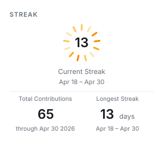
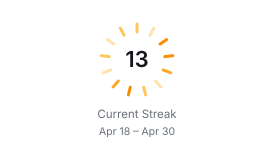
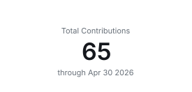
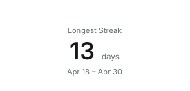
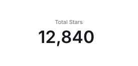
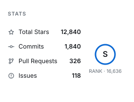
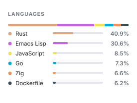

Cards and layout
Every card, how to place them in a README, and how a row behaves on a phone.
Card Types#
| Card | Output |
|---|---|
dashboard | Combined profile dashboard |
stats | Stats and rank card |
languages | Repository language share |
streak | Total contributions, current streak, longest streak |
heat | The contribution heat ring on its own |
metric | A single figure, chosen with --metric |
activity | Coding activity card |
status | Service status card |
The aliases top-langs, top-languages, and coding-activity are accepted by the CLI parser.
README Usage#
Reference the generated dashboard:
For a richer profile section:
<p align="center">
<img src="./profile/github-personal-stats.svg" alt="GitHub Personal Stats" width="100%" />
</p>To follow the reader's colour scheme, generate a dark card too and reference both through <picture>, as described under Themes.
Composing Tiles#
One wide dashboard has to shrink to fit a phone. GitHub renders a README at about 846px on a desktop and about 308px on a phone, so a 1000px card arrives on a phone at roughly a third of its size, taking 12.5px body text down to under 4px. A card cannot re-lay-out on its own either: GitHub strips style and CSS, so nothing in the page can react to the column it lands in.
Several smaller cards can, though. Images with fixed pixel widths sit side by side while they fit and wrap when they do not, at their own size either way. Three 275px tiles occupy 825px of the desktop column and stack into three rows on a phone, both at 1:1, so the text is the same size in both places.
One fetch, many tiles#
Rendering never asks GitHub anything: a card is drawn from a profile that has already been read. Reading a profile, on the other hand, is the expensive part, and --authored-languages makes it far more so, because attributing a language by who wrote it costs a request per repository per address. A set of tiles that fetches once per tile pays that bill once per tile and can exhaust an hourly API allowance partway through.
fetch reads a profile once and saves it; --fixture draws from what was saved:
cargo run -p github-personal-stats -- fetch \
--user your-github-login \
--authored-languages \
--output profile.json
cargo run -p github-personal-stats -- generate --fixture profile.json --card stats --output stats.svg
cargo run -p github-personal-stats -- generate --fixture profile.json --card heat --output heat.svgFor one profile of 194 repositories, the fetch took seven minutes and the fourteen tiles drawn from it took a third of a second altogether.
A saved profile holds the answers to the options that shape a fetch, so those belong to fetch: --authored-languages, --author-email, and --min-repo-language-share. Passing one of them to generate --fixture is refused rather than quietly ignored. Everything about how a card is drawn, and --hide-language, still applies at render time, so one saved profile serves any number of themes, widths, and cards.
In a workflow, that is one fetch step ahead of the render steps:
- uses: liuchong/github-personal-stats@v1.5.0
with:
mode: fetch
path: ${{ runner.temp }}/profile.json
options: --user ${{ github.repository_owner }} --authored-languages
token: ${{ secrets.PERSONAL_STATS_TOKEN }}
- uses: liuchong/github-personal-stats@v1.5.0
with:
card: stats
path: profile/stats.svg
options: --fixture ${{ runner.temp }}/profile.json --width 275 --height autoThe render steps need no token, because they reach nothing.
Tile sizes worth knowing#
| Container | Measured width | Fits at 275px |
|---|---|---|
| Desktop README | ~846px | 3 per row |
| Phone README (390px viewport) | ~308px | 1 per row |
Fitting a card to its content#
--height auto sizes a card to what it draws, so a tile carries no dead space and needs no guessing:
cargo run -p github-personal-stats -- generate \
--user your-github-login \
--card stats \
--width 275 \
--height auto \
--output profile/tiles/stats.svgThe dashboard and status cards divide a height between sections rather than having one of their own, so they need an explicit height; asking them for auto is refused rather than quietly ignored.
The activity card is the one exception to everything else on this page: it is drawn from what you collected locally rather than from your GitHub profile, needs no token, and refuses rather than drawing an empty card if it has no record to read. It takes --height auto like the rest, and stacks its two spans when a tile is too narrow to hold them side by side. See Coding Activity.
Splitting the streak card#
At a tile width the streak card gives the ring a full-width row and sits its two figures underneath, because three columns leave each figure about 90px:

Its parts are also available on their own, which lets a README place them wherever it likes. heat draws the ring, and metric draws a single figure:



--metric accepts any name the panel lists accept, so the same vocabulary covers tiles: stars, commits, prs, issues, reviews, repos, total, longest, current, and active.
cargo run -p github-personal-stats -- generate \
--user your-github-login \
--card metric --metric stars \
--width 275 --height auto \
--output profile/tiles/stars.svg
Lining tiles up#
Padding scales with card width by default, which suits a card seen on its own but leaves the content edges of different widths out of line. Pin it when mixing widths in one block:
--padding 20Display size and layout size#
Because the cards are vector, the size a card is laid out at and the size it arrives at are separable. --scale multiplies only the latter, so a tile can be laid out for a narrow column and still be displayed larger:
--scale 1.5A row that reflows#
Give each tile an explicit width so GitHub keeps it at its own size:
<p>
<img src="./profile/tiles/stats.svg" width="275" alt="GitHub stats" />
<img src="./profile/tiles/languages.svg" width="275" alt="Top languages" />
<img src="./profile/tiles/streak.svg" width="275" alt="Contribution streak" />
</p>


Keep the widths in a row adding up to no more than about 825px, or a tile drops to the next row and leaves a gap beside the ones above it.
Handing a phone a different drawing#
A row of two cannot fill a desktop column and stay under 308px at the same time, so two rows of unequal width are the usual outcome. What CSS cannot do here, <picture> can: the media attribute on a <source> takes any media query, not only prefers-color-scheme, and the browser is the one evaluating it. Drawing a panel at both widths lets each column have the one it can show unscaled:
<picture>
<source media="(max-width: 768px) and (prefers-color-scheme: dark)" srcset="./profile/stats-narrow-dark.svg" />
<source media="(max-width: 768px)" srcset="./profile/stats-narrow-light.svg" />
<source media="(prefers-color-scheme: dark)" srcset="./profile/stats-dark.svg" />
<img src="./profile/stats-light.svg" alt="GitHub stats" />
</picture>Leave the width attribute off here. It would apply to whichever drawing was chosen and stretch the narrow one; without it each drawing arrives at its own size. Because both come from one saved profile, the second width costs a render rather than a fetch.
Combine this with <picture> from Themes to follow the reader's colour scheme as well. Regenerate the images in this section with python3 scripts/render-tile-samples.py after building the CLI.
Sizing#
The default dashboard size is 1000x420.
cargo run -p github-personal-stats -- generate \
--user your-github-login \
--card dashboard \
--authored-languages \
--author-email old@example.com,work@example.com \
--hide-language Ruby \
--min-repo-language-share 2 \
--width 1000 \
--height 420 \
--output profile/github-personal-stats.svgFor a local live preview, export a token with the same permissions:
GITHUB_TOKEN=YOUR_PERSONAL_STATS_TOKEN cargo run -p github-personal-stats -- generate \
--user your-github-login \
--card dashboard \
--output profile/github-personal-stats.svgIndividual cards can use smaller dimensions:
cargo run -p github-personal-stats -- generate \
--user your-github-login \
--card languages \
--width 520 \
--height 260 \
--output profile/languages.svgCards below 440px wide switch to layouts meant for a narrow column, and --height auto removes the need to pick a height at all. See Composing Tiles for building a row that reflows on a phone.